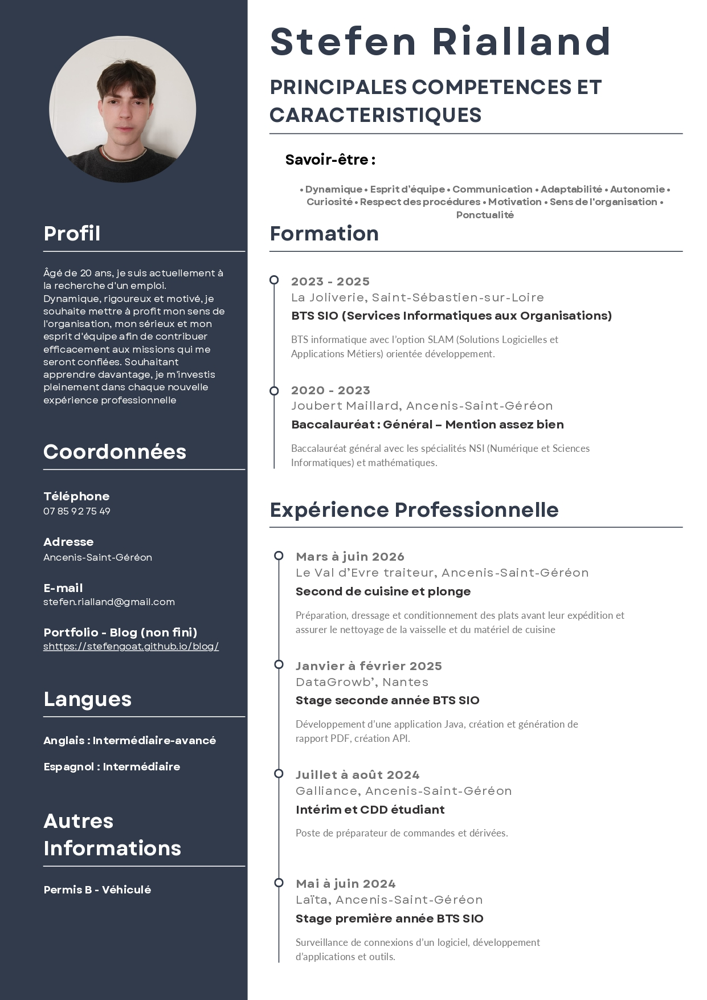

Qui je suis ?
Je m'appelle Stefen Rialland et j'ai 20 ans. Je suis diplômé d'un BTS SIO (Services informatiques aux Organisations).
J'ai étudié au lycée La Joliverie à Saint-Sébastien, au sud de Nantes.
Avant cela, en 2023, j'ai obtenu mon bac Général avec les spécialités NSI (Numérique et Sciences Informatiques) et mathématiques, mention assez-bien.
Depuis, je me suis plongé dans le monde de l'informatique, un domaine dans lequel je me susis projeté.
Mon orientation véritable vers ce secteur s'est concrétisée avec mon inscription en BTS.
Ce cursus m'a permis d'acquérir des compétences et des connaissances spécifiques à l'informatique.
Je me suis orienté vers le développement.
Ce qui a eu pour finalité, le choix de l'option SLAM (Solutions Logicielles et Applications Métiers) en seconde année.
Je n'ai malheureusement pas pu continuer mes études dans ce domaine.
Je suis actuellement à la recherche d'un emploi afin de contribuer efficacement aux missions qui me seront confiées.
Mon objectif présent est d'apprendre davantage, d'acquérir de nouvelles compétences et de m'investir dans
de nouvelles expériences professionnelles, pas forcément dans l'informatique.